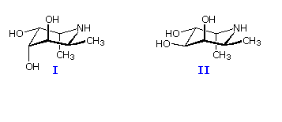

Two isomeric structural formulas (I & II) are drawn below. Questions concerning these structures shoud be answered by entering a number or selecting the desired response as designated.
Jmol models of these structures may be examined by Clicking Here
